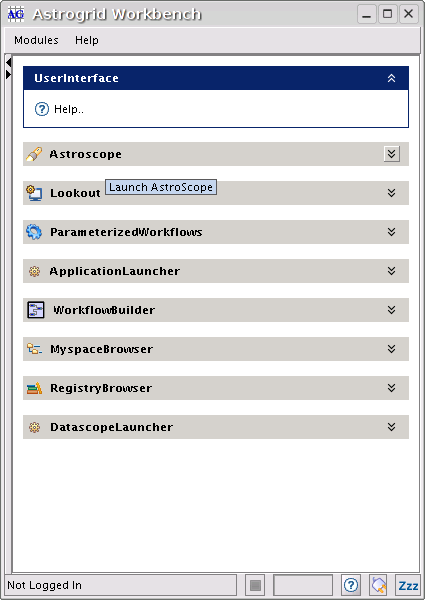
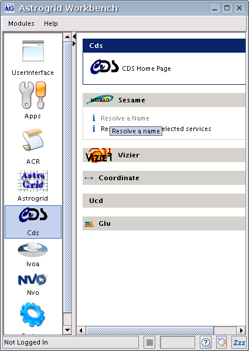

Workbench - main window
The first window displayed by the workbench is an menu containing links to launch
different User Interface components of the workbench suite.

These components are
- Astroscope
- Query multiple catalog and image servers by position, vizualize result metadata and save results
to local storage or myspace
- Lookout
- Monitor and manage remote queries, applications and workflows. Execute new processes, and view results from completed ones.
- Parameterized Workflows
- Launch a selection of pre-written workflows that do useful science tasks by just providing a few parameters
- Application Launcher
- Create new remote queries or processes
- Workflow Builder
- Create and edit workflows
- Myspace Browser
- View and manage contents of your distributed storage
- Registry Browser
- Search for information about astronomical catalogs and services
- Datascope Launcher
- Utility to simplify saving resuts from NVO Datascope into Myspace
Advanced Users
If you drag the divider on the left-hand side of the window, you'll see a selection of buttons - 'Astrogrid', 'NVO', 'CDS', etc. Each of these buttons displays a
separate pane of lower-level operations for accessing virtual observatory services. Most will prompt the user for one or two input parameters, perform a simple
operation and then display the results. Most of this functionality is available in a more user-friendly manner from the main user interface components - however,
the low-level operations are useful for trying out things when writing scripts.

These operations are also available from the Modules menu.
To return to the main list of user interface components, click 'UserInterface'